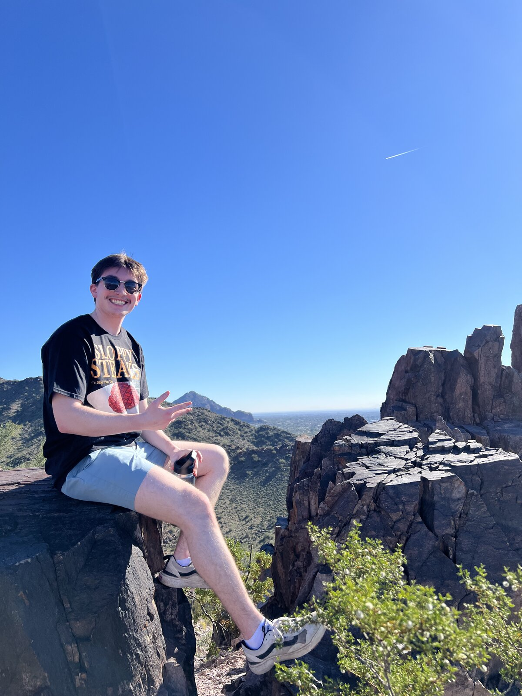
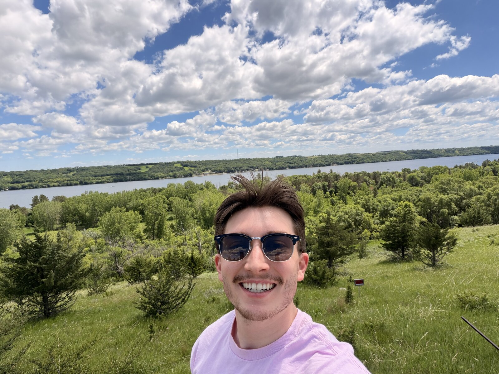
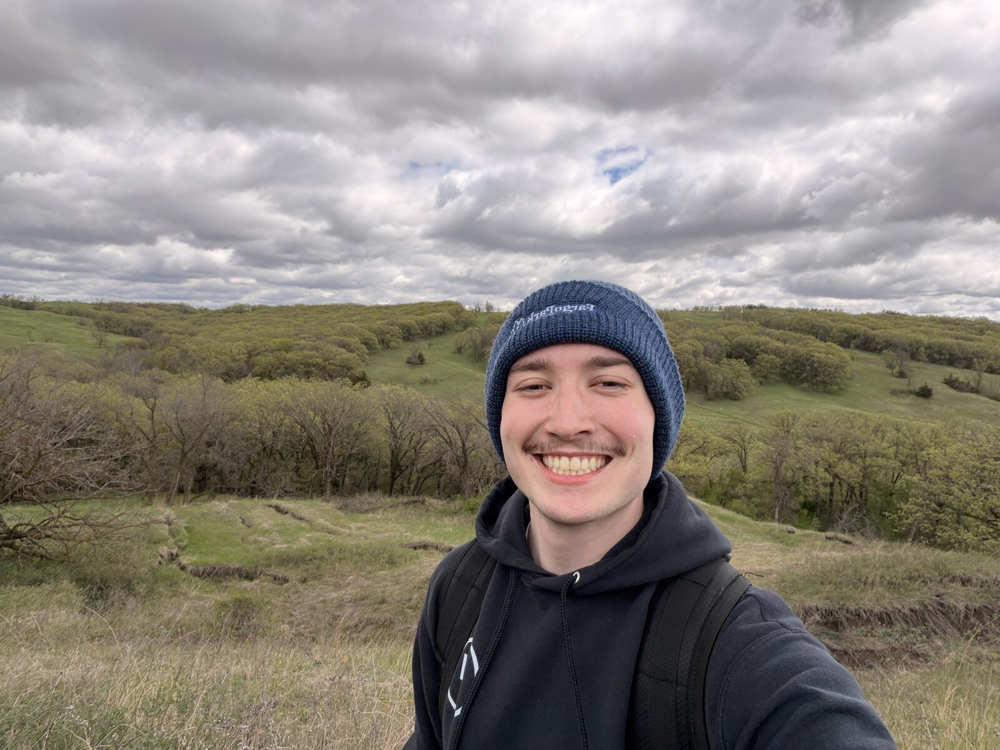
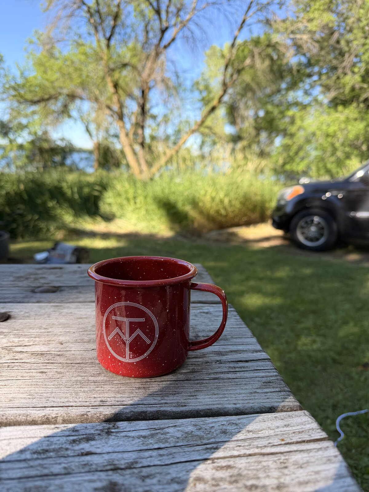

💻
.NET by day
Software engineer writing C# for a living — the respectable kind of semicolon enthusiast.
Software engineer who spends his days in .NET and his evenings doing almost anything that isn't sitting still — trails, coffee, keys, and the occasional weekend that disappears into a music festival.
I think wildly in wild ways — Tim Robinson

My favorite color is orange because orange — Amir, age 7
A rough map of where the time goes.
Software engineer writing C# for a living — the respectable kind of semicolon enthusiast.
Riding Fargo's trails on two wheels whenever the weather allows (and sometimes when it doesn't).
Chasing good coffee like it's a sanctioned sport. The podium changes weekly.
Producing in Logic Pro and working out scales and modes at the piano that I swear I'll use in an actual song someday.
Known to disappear into a music festival for a weekend and reappear with a longboard under one arm and strong opinions about the setlist.
Chiari malformation: officially, my brain is a little too big for its skull. Far more flattering than alarming.
Proof that the not-sitting-still thing is real.


